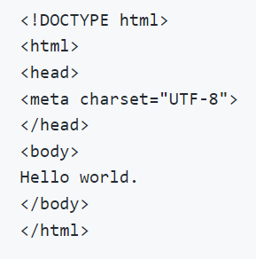
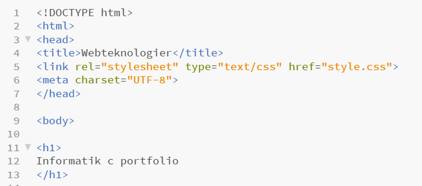
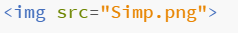
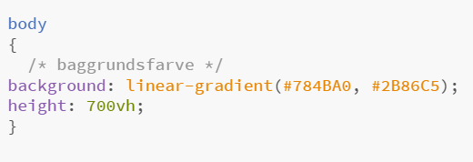
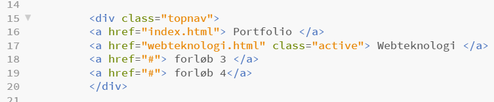
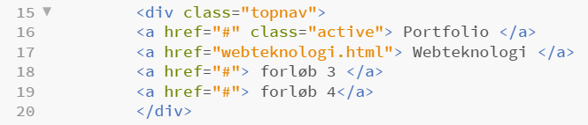
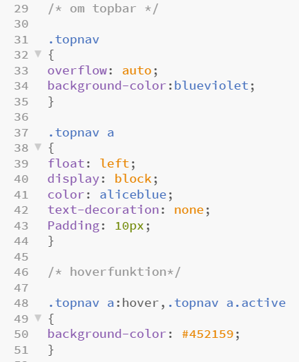

på denne side vil der være dokumentation og eksempler af kode brugt i forløbet om webteknologier
Den simpleste måde at opsætte en html hjemmeside er ved følgende kode
doctype kommandoen fortæller browseren, hvilket dokumenttype der er tale om. Herefter kommer html kommandoen som skal omslutte alt der skrives i html før at dokumentet kan læses. Det der så står inde for "head" kommandoen bliver ikke vist på siden, men er til for at browseren kan læse vigtig information fx indenfor styling i css. Dette vises her i nedenstående billede, som er et screenshot af den øverste del af koden til denne underside, hvor der indenfor head kommandoen er skrevet "link rel="stylesheet" type="text/css" href="style.css", som henviser til at stylingen af siden, foretages i en css fil. Kommandoen "meta charset="UTF-8" ligger også mellem head-kommandoen og er til for at browseren kan læse bogstaver som æ,ø og å. "Body" kommandoen som omslutter Hello world i ovenstående billede, fortæller browseren hvad der skal vises på selve hjemmesiden. Den skal omslutte tekst, billeder osv, som ligesom skal udgøre "kroppen" af siden.

Billeder indsættes vha. af at skrive "img src=valgt billede her" I nedenstående billede ses et screenshot af kommandoen for et af de øvrige billeder brugt på siden her. Den ligger i samme mappe son resten af billederne på siden, og kan derfor bare kaldes, det som den også hedder i mappen og så filtypen herefter.
Siden er lavet ud fra den analoge farveformel, hvor der bruges nærtstående og ligenende farver fra farvehjulet. Ift. Selve koden er baggrundsfarven stiliseret i css-dokumentet tilknyttet disse to sider og ser sådan ud:
øverst i koden fortæller vi css dokumentet at det er hele "body" vi ønsker at ændre farve på. Herefter har jeg skrevet en kommentar til mig selv, om at denne kommando kontrollerer baggrundsfarven. Herefter kommer selve kommandoen, der er ansvarlig for baggrundsfarven, sammen med de 2 farvekoder der er hentet fra websiden "grabient" for at få den glidende overgang. Til sidst indikerer height kommandoen højden eller længden af farvetoningen og altså også af siden.
Øverst på siden ses en navigationsbar, som er lavet ved følgende kode:
 kommandoen indledes med "div" som står for content division element og bruges ligesom til at indramme et layout eller design på hjemmesiden. Herefter defineres den kommende kommando vha. Class kommandoen som "topnav" og de forskellige elementer der skal indgå i topbaren skrives ind med et "a" først.
de to ovenstående billeder er fra hvar sit html dokument. På det ene billede står der "class=active" ud fra wbteknologi og på den anden ud fra index. Det styrer den funktion der gør, at der i navigationsbaren vil være highlighted hvilken af siderne man er inde på.
Kommandoen href="#" angiver hvilket html dokument der henvises til, når man trykker på feltet i topbaren. efter href="#" kommandoen kommer navnet på siden i topbaren. I øjeblikket er der kun henvist til 2 dokumenter, men i takt med at portfolien udvides, viderebygges topbaren også.
Stylingen af Topbaren er skrevet i css ved følgende kode:
Øverst er skrevet en kommentar om at følgende afsnit omhandler topbaren. herefter angives det med ".topnav", at det er topnavigationsbareen vi ønsker at style. Herefter skrives "overflow:auto;" hvilket styrer indholdet i boksen og gør så det ikke bryder uden for dets grænser. "auto"-værdien sikrer, at når indholdet fortsætter uden for dens boks, hvis det fx bliver vist på en telefon og skal omstruktureres, så kommer der en scrollbar så indholdet ligesom bliver indenfor for dets grænser. Herefter defineres baggrundsfarven med kommandoen "background-color"
Nedenunder fortæller vi css-dokumentet hvordan det skal designe de individuelle bokse i topbaren, nemlig ".topnav a" "float: left;" fortæller de skal ligge fra venstre side af. "display:block; fortæller at de skal vises som firkantede blokke med skillevægge imellem dem. "color" angiver farven på boksene. "text-decoration: none;" fortæller at der ikke skal være nogen særlig ellere ekstra tekst dekoration. "padding" angiver ligesom hvor stort rummet omkring boksene skal være i antal pixels. Hvis man satte padding til 50, ville topbaren blive kæmpestor.
Til sidst har vi hovrfunktionen som gør at felterne i navigationsbaren lyser op når man trækker musen henover. Den skrives som ".topnav a:hover,.topnav a.active", hvor den farve som den skal vise på det berørte felt, fortælles nedenunder med "background-color: farvekoden;"